Explora Nuevos Destinos
Viajar permite conocer paisajes sorprendentes, tradiciones únicas y culturas que han evolucionado a lo largo de siglos. Cada destino posee características particulares que lo hacen especial y digno de ser visitado.
En esta sección presentamos algunos de los lugares más representativos del turismo internacional, ideales para quienes buscan aventura, descanso, historia o experiencias culturales inolvidables.
Playas Paradisíacas
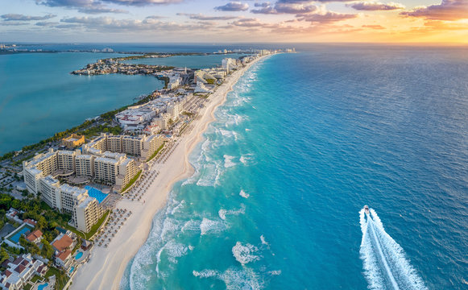
Cancún
Cancún es uno de los destinos turísticos más importantes de América Latina. Sus playas de arena blanca y aguas turquesa atraen visitantes de todo el mundo.
Además de sus impresionantes paisajes, ofrece actividades acuáticas, zonas arqueológicas cercanas y una vibrante vida nocturna.
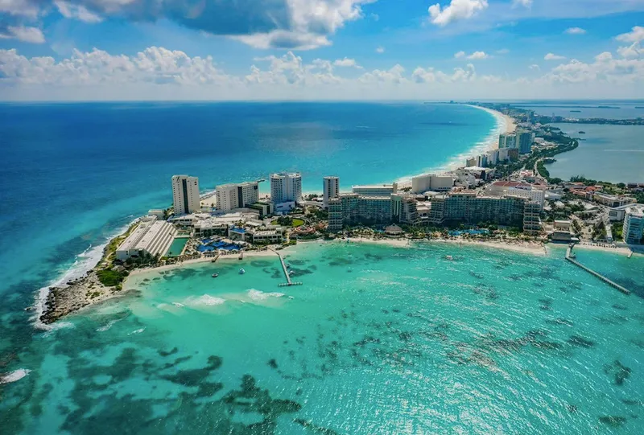
Maldivas
Las Maldivas son conocidas por sus lujosos resorts, arrecifes de coral y espectaculares vistas al océano.
Es un destino ideal para quienes buscan tranquilidad, relajación y experiencias exclusivas frente al mar.
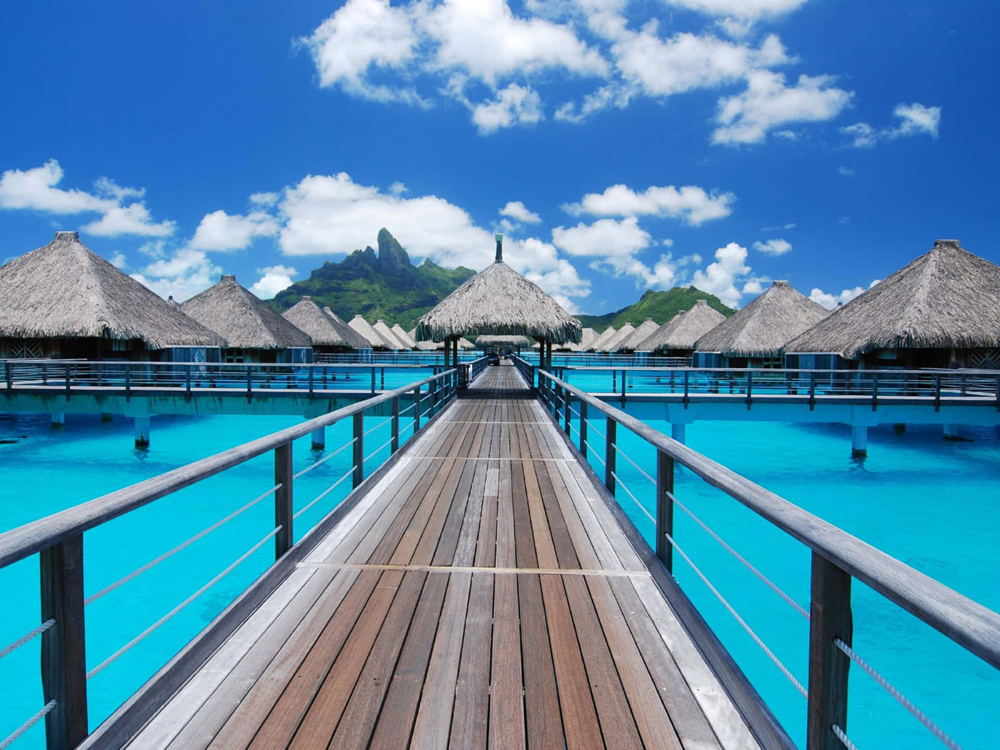
Bora Bora
Ubicada en la Polinesia Francesa, Bora Bora es famosa por sus aguas cristalinas y bungalows sobre el mar.
Es considerada uno de los lugares más románticos del mundo y uno de los destinos preferidos para lunas de miel.
Ciudades Históricas

Roma
La capital italiana es un museo al aire libre donde convergen siglos de historia, arte y arquitectura.
Sus monumentos emblemáticos como el Coliseo y el Foro Romano atraen millones de visitantes cada año.
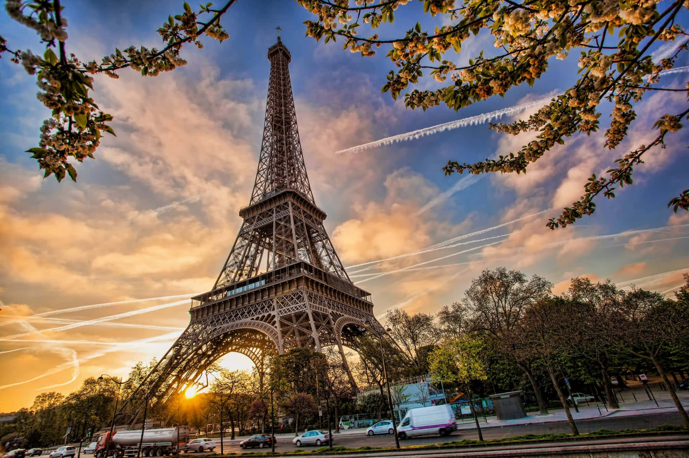
París
Conocida como la Ciudad de la Luz, destaca por su riqueza cultural, artística y gastronómica.
La Torre Eiffel, el Museo del Louvre y sus elegantes avenidas la convierten en un destino imperdible.
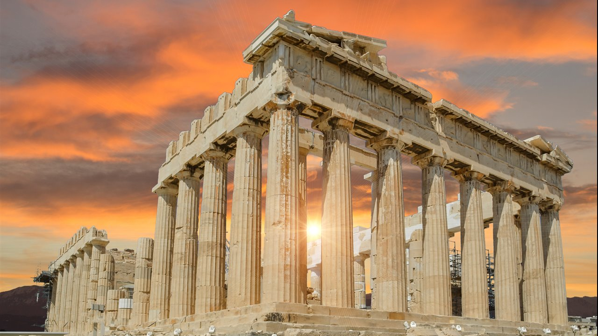
Atenas
Considerada la cuna de la civilización occidental, conserva importantes vestigios de la antigua Grecia.
La Acrópolis y el Partenón representan algunos de los tesoros históricos más importantes del mundo.
Maravillas Naturales
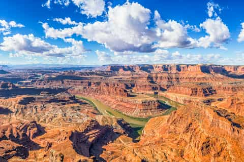
Gran Cañón
Ubicado en Estados Unidos, el Gran Cañón es una de las formaciones geológicas más impresionantes del planeta.
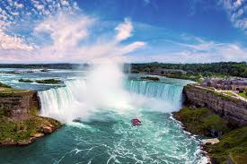
Cataratas del Iguazú
Consideradas una de las siete maravillas naturales, ofrecen un espectáculo único de agua y vegetación.
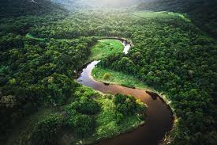
Amazonas
El Amazonas es la selva tropical más extensa del mundo y posee una biodiversidad extraordinaria.
Desiertos Exóticos

Sahara
Es el desierto cálido más grande del mundo y se extiende por gran parte del norte de África.
Sus impresionantes dunas doradas crean paisajes únicos que parecen interminables.
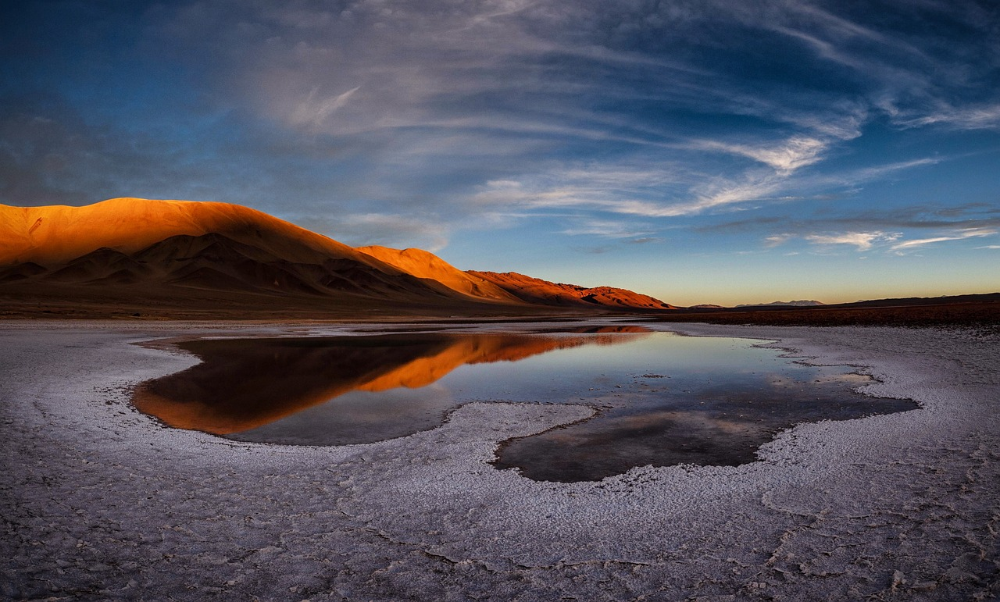
Atacama
Situado en Chile, es considerado uno de los lugares más áridos del planeta.
Sus paisajes lunares y cielos despejados son ideales para la observación astronómica.

Wadi Rum
Este desierto jordano destaca por sus enormes montañas de roca y extensas llanuras rojizas.
Es conocido mundialmente por haber servido como escenario para numerosas producciones cinematográficas.
Ruinas Arqueológicas
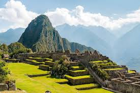
Machu Picchu
Antigua ciudad inca ubicada en las montañas de Perú, considerada Patrimonio Mundial de la UNESCO.
Su arquitectura y ubicación la convierten en una de las maravillas más visitadas del planeta.

Chichén Itzá
Uno de los centros ceremoniales más importantes de la civilización maya en México.
La Pirámide de Kukulkán es uno de sus principales atractivos arqueológicos.
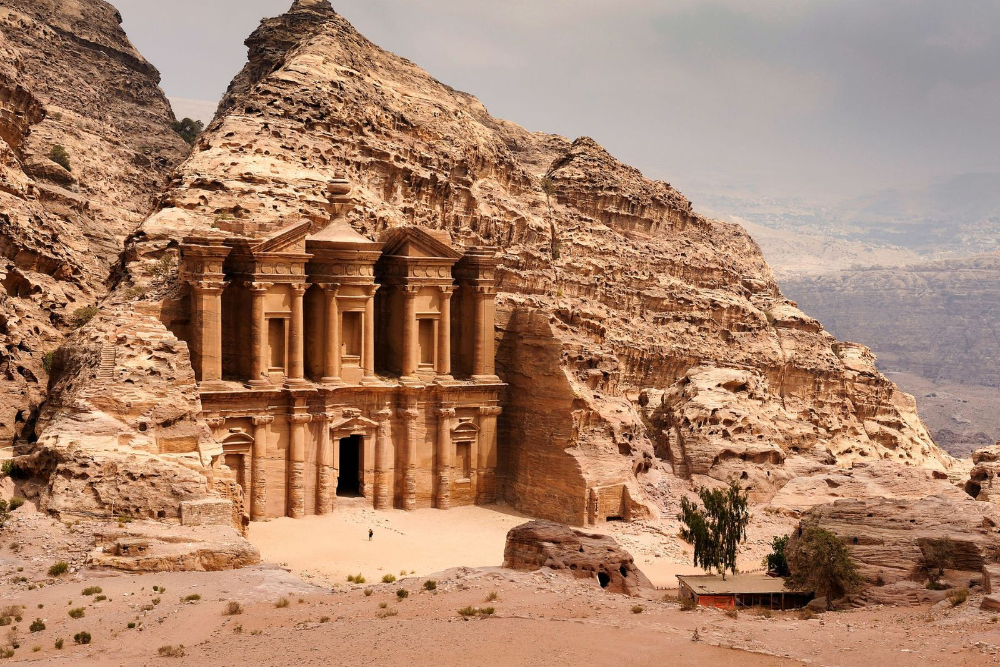
Petra
Ciudad excavada en roca ubicada en Jordania y considerada una de las maravillas del mundo moderno.
Su espectacular arquitectura atrae turistas de todos los continentes.
Pueblos Mágicos
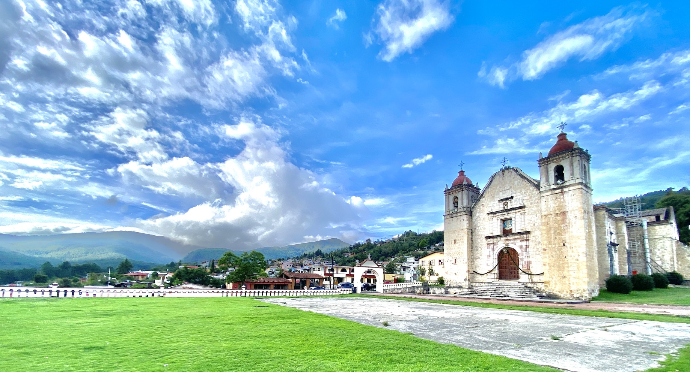
Capulálpam de Méndez
Ubicado en Oaxaca, destaca por sus tradiciones indígenas, paisajes montañosos y turismo comunitario.
Es reconocido como uno de los Pueblos Mágicos más representativos del sur de México.
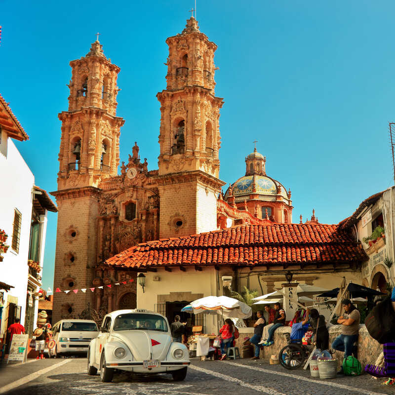
Taxco
Famosa ciudad colonial del estado de Guerrero conocida por su producción artesanal de plata.
Sus calles empedradas y arquitectura histórica atraen visitantes durante todo el año.
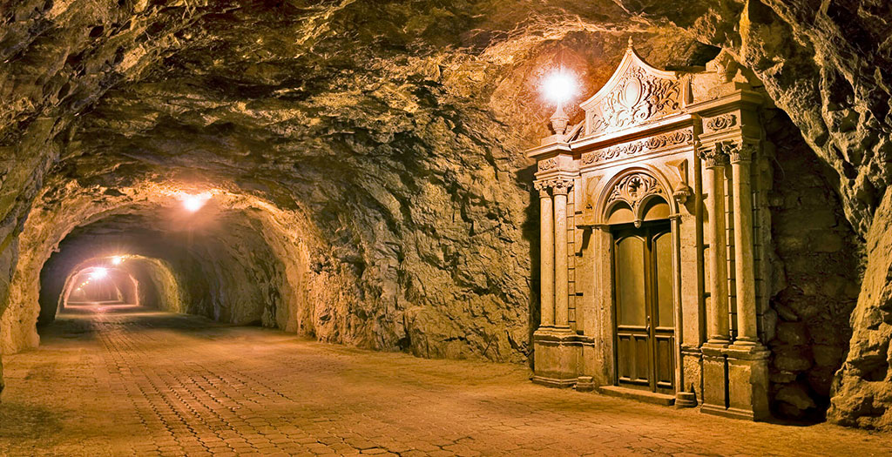
Real de Catorce
Antiguo pueblo minero ubicado en San Luis Potosí, rodeado por impresionantes paisajes desérticos.
Conserva gran parte de su historia y es un destino popular para el turismo cultural y espiritual.
Comparativa de Destinos
| Destino | Tipo | Continente | Popularidad |
|---|---|---|---|
| Cancún | Playa | América | ★★★★★ |
| París | Ciudad Histórica | Europa | ★★★★★ |
| Roma | Ciudad Histórica | Europa | ★★★★★ |
| Amazonas | Naturaleza | América | ★★★★☆ |
| Maldivas | Playa | Asia | ★★★★★ |
Actividades Turísticas Recomendadas
- Excursiones guiadas.
- Recorridos históricos.
- Senderismo en parques naturales.
- Buceo y actividades acuáticas.
- Fotografía de paisajes.
- Visitas a museos y galerías.
- Exploración gastronómica local.
- Festivales culturales.
- Turismo ecológico.
- Observación de fauna silvestre.
Consejos para Viajeros
Antes de visitar cualquier destino turístico es recomendable planificar el viaje con anticipación, investigar el clima, conocer las costumbres locales y verificar la documentación necesaria.
También es importante respetar el patrimonio cultural y natural, contribuir al turismo responsable y apoyar a las comunidades locales.